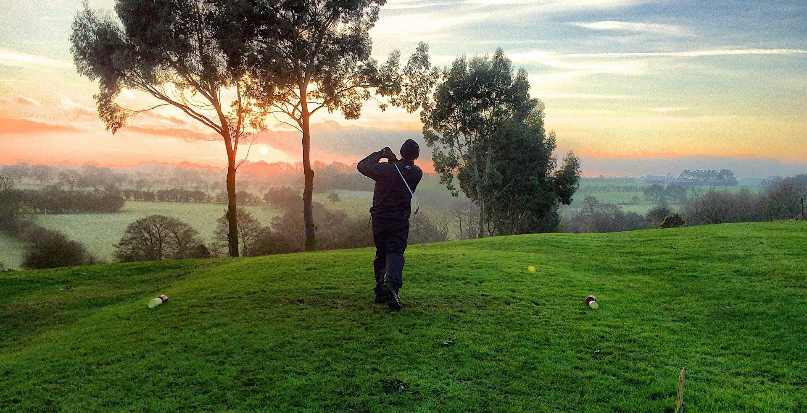

東京に帰ってきた。
懐かしくもあり、安心できる街並みが変わらず広がっている。
今まで隠すつもりはなかったが、どのような形で書こうかずっと悩んでいた。
いっそのこと、包み隠さず全てを吐露してしまおうかと思ったこともあったが、結局それもやめた。とても勝手なことなのだろうが、多くを語るのはよそうと思う。
ただ、岐阜での生活で得たものは大きく、温かい人たちに恵まれたのは確かだ。
長い人生からしてみれば短期間の居住だったが、その時間は間違いなく僕の財産になった。当時は周囲の人を心配させてしまったが、今では岐阜で生活できて幸せだったと思っている。
既に新しいスタートは切っている。
都心にもアクセスしやすい、初めて住む東京の郊外。でも、どこか親しみやすいと感じるのは、岐阜と同じく自然の多い街だからだろうか。
今は熱中できる仕事やライフワークの書くことのバランスが取れていて、メリハリのある日々を送れている。
それは、感覚でいえば、ゴルフでいうホールインワンを偶然決めてしまったかのような驚きだ。僕の場合、頭の中で描く理想よりも、実際に生活してみて心地いいと思える自分らしい生き方を見つけられて良かったのかもしれない。
改めて、いつも支えてくれる人たちに感謝を伝えたい。
人生の曲がり角、何が飛び出してくるか分からず不安がる僕に言葉をかけてくれる、全ての人に。